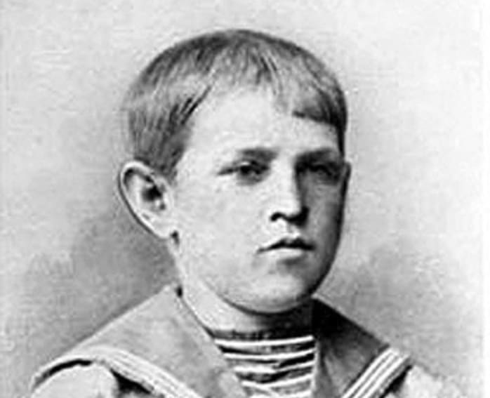
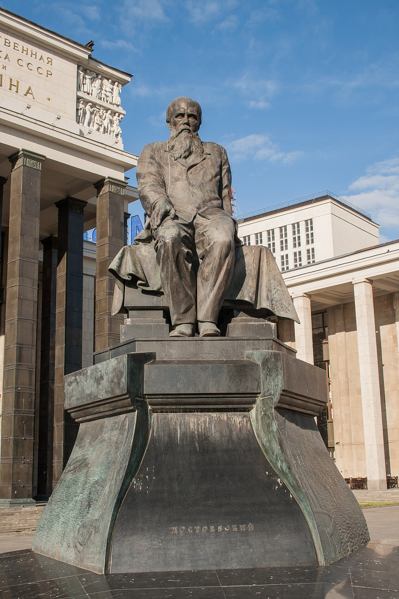

Имя: Федор Михайлович Достоевский
Род деятельности: Писатель, философ
Дата рождения: 11.11.1821
Дата смерти: 09.02.1881
Место рождения: Москва
Место смерти: Санкт-Петербург
Знак зодиака: Скорпион
Федор Достоевский – писатель, философ, мыслитель, публицист. Автор романов «Бедные люди», «Преступление и наказание», «Идиот», «Униженные и оскорбленные», «Братья Карамазовы».
При жизни творчество Федора Достоевского не нашло должного понимания у современников. И только после смерти его оценили по достоинству – он получил звание классика русской литературы и лучшего романиста в мировом масштабе.
Родился Федор Достоевский 11 ноября 1821 года в Москве, в семье Михаила Достоевского и Марии Нечаевой. Отец мальчика принадлежал к роду шляхтичей Достоевских, местом его работы была Мариинская больница для неимущих, где и родился будущий классик русской литературы. Мать Федора была из рода столичных купцов.
Семья Достоевских была многодетной. На момент рождения Федора в ней подрастали Михаил и Варвара, а после него родились Андрей, Николай, Вера и Александра. Детские годы будущего классика прошли в Москве. Семья придерживалась распорядка, раз и навсегда установленного отцом. По вечерам все собирались вместе, много читали, няня рассказывала детям множество русских народных сказок. Лето Достоевские проводили в небольшом поместье деревни Даровое под Тулой. Впоследствии писатель говорил, что это было самое лучшее время его жизни, оставившее незабываемые впечатления.

Жили Достоевские довольно скромно, но на образовании детей не экономили. Латынь они изучали с отцом, читать начали под руководством матери. Потом наняли приходящих учителей, с которыми дети прошли азы математики, научились говорить по-французски и писать на русском.
Первым серьезным ударом судьбы для Федора стала смерть матери в 1837 году от чахотки. Ему тогда только исполнилось 16, и он тяжело переносил потерю близкого человека. Отец теперь сам решал судьбы детей, и не придумал ничего лучшего, как отправить Федора и Михаила на учебу в Петербург. Они стали студентами Инженерного училища, хотя, как вспоминал позже Достоевский, мечтали о поэтах и поэзии.
В 1843-м году Достоевскому вручили диплом об окончании училища. В том же году он получил распределение на должность полевого инженера-подпоручика в Петербургской инженерной команде. Однако спустя год подал рапорт об отставке. С тех пор его биография была неразрывно связана с литературой, которой он посвящал каждую минуту своей жизни.
Федор очень любил европейскую литературу, его кумирами были Гомер и Пьер Корнель, Оноре де Бальзак и Жан Батист Расин, Уильям Шекспир и Виктор Гюго. Помимо этого его привлекало творчество соотечественников, среди которых самыми почитаемыми были Лермонтов и Державин, Гоголь и Карамзин. Но настоящий благоговейный трепет Достоевский испытывал по отношению к Александру Пушкину, он читал его стихи с ранних лет, многие знал наизусть.
Именно смерть Пушкина стала вторым ударом (после мамы) для молодого Федора. Он даже говорил, что если бы не носил траура по любимой маме, он бы попросил отца разрешить ему носить траур по Александру Пушкину.

Началом творческой биографии Федора Достоевского стал роман «Бедные люди», работу над которым он закончил в мае 1845 года. Произведение начинающего писателя так понравилось модным литераторам того времени Николаю Некрасову и Виссариону Белинскому, что первый присвоил ему звание «нового Гоголя» и напечатал его произведение на страницах своего альманаха «Петербургский сборник».
Потом Федор начал работу над повестью «Двойник», и по мере написания читал отрывки этого произведения на заседаниях литературного кружка Белинского. Все слушали с нескрываемым интересом, но когда он наконец-то закончил работу, то сильно разочаровал публику. Ему сделали замечание, что его герой какой-то вялый и скучный, сюжет растянут до неимоверной длины, и отбивает всякую охоту читать. Достоевский начал переписывать повесть, избавился от ненужных описаний, второстепенных эпизодов, растянутых диалогов и размышлений героев – от всего, что мешало сосредоточиться на сюжете.

В 1847-м Достоевского увлекли идеи социализма. Он стал постоянным участником кружка Петрашевского, где активно шло обсуждение судебной реформы, свободы книгоиздательства, отмены крепостного права. На одном из заседаний кружка Достоевский познакомил публику с письмом Белинского к Николаю Гоголю, которое считалось запрещенным. За это в апреле 1849-го он был арестован и посажен в Петропавловскую крепость, в которой пробыл восемь месяцев. Решением суда он был признан главным преступником, потому что не донес на Белинского и распространял текст запрещенного письма, в котором автор подрывал устои церкви и правительства. Он получил высшую меру наказания – расстрел, но буквально перед самой казнью вышел указ императора о смягчении приговора петрашевцам. Вместо расстрела Достоевский отправился в Омск на четыре года, отбывать каторгу, после которой служил рядовым в Семипалатинске. В 1856-м, после коронации Александра II, Федора амнистировали.
Годы пребывания писателя в Омске нашли отражение в его повести «Записки из Мертвого дома». Автор одним из первых описал каторгу, существование заключенных, быт и нравы, царящие в этом мрачном месте. Современники писателя по-разному оценили его произведение. Для одних повесть стала откровением, другие ее просто не признали. Тургенев сравнил «Записки» с «Адом», написанным Данте, по мнению Александра Герцена повесть сродни фреске «Страшный суд» Микеланджело. Жанр этой повести не определили и до наших дней. Одни говорят, что ее вполне можно признать мемуарами, потому, что там слишком много воспоминаний Достоевского, другие считают, что присутствие вымышленного персонажа и не соблюдение точности исторических фактов не дает ей право называться автобиографической.
Первый раз писатель женился на Марии Исаевой, знакомство с которой состоялось сразу после отбывания наказания на каторге. Они прожили семь лет, в 1864-м Мария скоропостижно скончалась.

В одном из вояжей за границу в 60-х годах Федор влюбился в Апполинарию Суслову, которая была достаточно эмансипированной особой. Она стала прообразом Полины в романе «Игрок» и Настасьи Филипповны в «Идиоте».
Возраст писателя приближался к сороковой отметке, а настоящего счастья в личной жизни он так и не узнал, пока не познакомился с Анной Сниткиной. В ее лице он обрел верную подругу, мать его детей и прекрасного помощника. Она сама издавала романы супруга, занималась решением всех финансовых вопросов, потом издала свои мемуары о любимом муже. Свой последний роман писатель посвятил именно ей.

В этом браке у Достоевского родились две дочери – Софья и Любовь, и два сына – Федор и Алексей. Софья умерла еще в младенчестве, трое выжили, но продолжил дело отца только один ребенок – сын Федор
Сердце Федора Достоевского перестало биться 9 февраля 1881 года. Писатель страдал туберкулезом легких, хроническим бронхитом и эмфиземой легких, которые и стали причиной смерти. На тот момент известному писателю было всего 59 лет.

На церемонии прощания с писателем присутствовало несколько сотен человек. Траурная процессия растянулась почти на километр. Местом упокоения Федора Достоевского стало Тихвинское кладбище Петербурга.